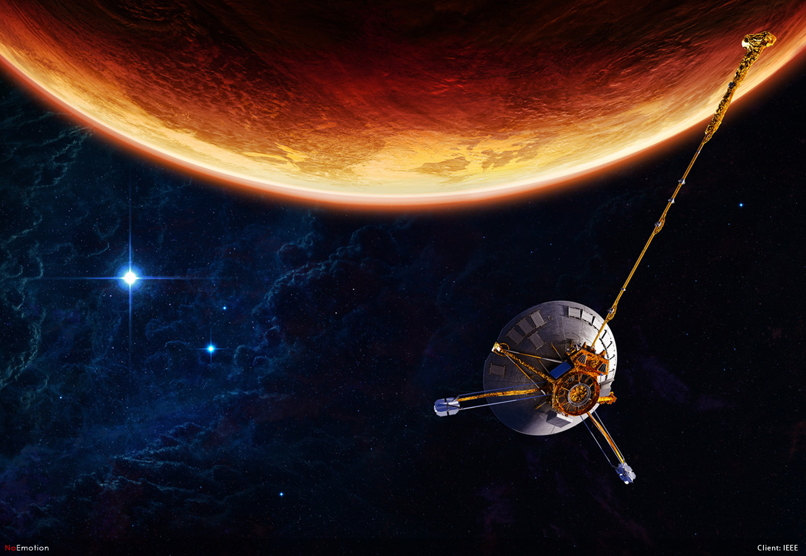
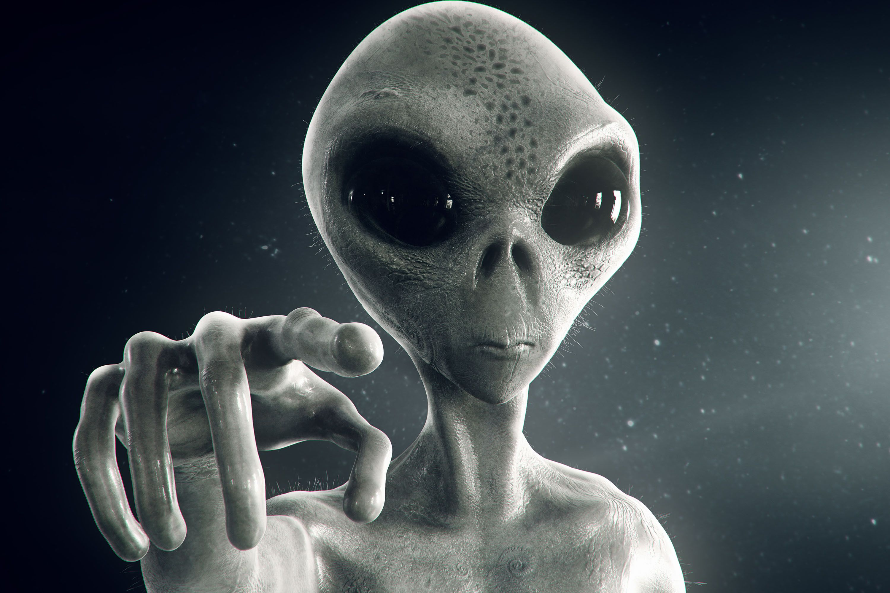
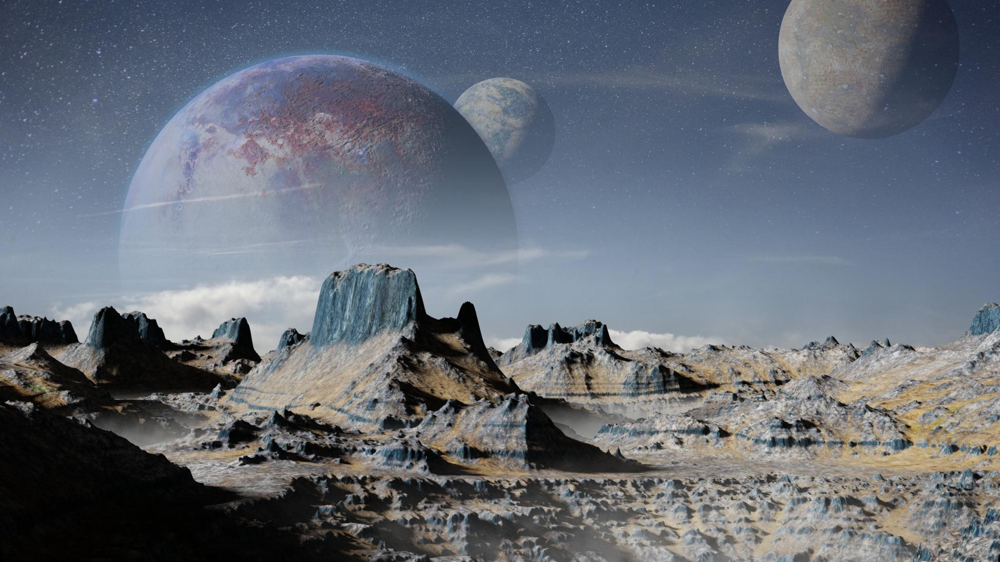

Pollution terrestre
Pollution spatiale
Pollution planétaire
Pollution terrestre
Pollution spatiale
Pollution planétaire


La pollution
PLANETAIRE
En partant à la conquête de l'espace l'Homme a modifié l'environnement t de potentielles nouvelles espèces extraterrestre
Scrollez pour découvrir la réalité
Pollution des planétes
Pollution bactérienne
impact de l'homme
Observez vous-même
Une expérience en réalité virtuelle
La pollution à différents aspects, le plus évident est visible est la présence sur les corps célestes explorés par l’Homme des restes de sondes, des robots et de leurs dispositifs d’atterrissage.
Il y a par exemple depuis l’exploration sur la Lune plus de 180 tonnes de déchets qui ont été laissé par l’Homme et pourtant on ne compte seulement 6 missions lunaires et 12 hommes ont foulé son sol.
Le second aspect est moins visible mais tout aussi important. Il s’agit de la contamination de l’environnement par les bactéries provenant de la planète Terre, emmenées par ces engins spatiaux. La présence de ces bactéries pourrait à terme poser plusieurs problèmes, comme la perturbation des recherches sur la vie extra-terrestre effectuées par les exobiologistes. Comment savoir si les bactéries trouvées sur une planète ne proviennent pas de la sonde elle-même ?
Le fait qu’il existe des bactéries extrêmophiles capables de vivre dans des conditions extrêmes, ayant survécu sur les sondes spatiales revenues sur Terre après une mission, a fait prendre conscience d’une possible pollution bactérienne .Dans une optique de prévention des précautions nécessaires aux missions spatiales sont apparues. Il existe 5 catégories pour différencier les précautions à prendre en fonction du type de planète, du type de la mission (survol lointain, mise en orbite, atterrissage …).
Aujourd'hui, nous allons dans l'espace sans savoir s'il existe une autre forme de vie extra-terrestre. Et si c'etait le cas, si d'autres espèces vivaient dans l'espace ou sur les corps célestes que nous visitons ? Avec tous les débris spatiaux, les gaz et les bactéries, est-ce que nous ne serions pas en train de totalement modifier leur système de vie, leur biodiversité ?
Ce sont des questions que les scientifiques sont en train de se poser, est-ce que nous ne serions pas en train de totalement modifier oo détruire l'environnement d'autres espèces ou être vivants ?L'être humain est en train de s'imposer dans l'espace, il existe même des projets pour habiter sur la Lune ou sur Mars au risque de déranger d'autres espèces deja présentes.
 